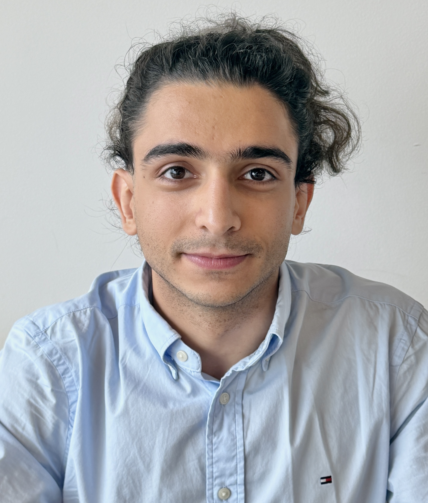

PhD Student in Computer Science · University of Maryland
Advised by Soheil Feizi, Reliable AI Lab
I am a PhD student in Computer Science at the University of Maryland, where I am advised by Soheil Feizi in the Reliable AI Lab. My research focuses on post-training large language models, with an emphasis on reasoning efficiency, reinforcement learning for reasoning and alignment, and reducing the cost of long-form reasoning. I also study failure modes of multimodal LLMs and tool use in agentic AI, with the broader goal of understanding and improving the reliability of modern AI systems.
In summer 2026 I am a research intern at Capital One in New York, working on efficient reasoning and LLM post-training. Before my PhD, I received my Bachelor's degree in Computer Engineering from Sharif University of Technology.
Outside of research, you'll usually find me doing calisthenics or weight lifting.
* denotes equal contribution